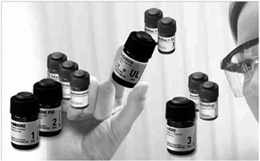

Omnitroles

DESCRIPCIÓN: MAS® Omni•CARDIO™ de Thermo ScientifiC está diseñado para su uso en el laboratorio clínico como suero de control valorado para monitorizar las condiciones de ensayo relacionadas con las determinaciones de los marcadores críticos cardiacos y asociados.
CARACTERÍSTICAS:
MAS® Omni•CORE™ está indicado para utilizarse como control analizado para supervisar las condiciones del análisis en un gran número de determinaciones clínicas de laboratorio. Cuando analice alguno de los constituyentes de la lista, incluya Omni•CORE con las muestras de suero de pacientes.
MAS® Omni•IMMUNE™ está indicado para utilizarse como control analizado para supervisar las condiciones del análisis en un gran número de determinaciones de laboratorio. Cuando analice alguno de los constituyentes indicados, incluya Omni•IMMUNE con las muestras de suero de pacientes. Se suministran valores de análisis para los sistemas específicos indicados. El usuario puede comparar las observaciones con los intervalos esperados a fin de asegurar el rendimiento uniforme de los reactivos y del instrumento.
MAS® Omni•IMMUNE™ PRO está indicado para utilizarse como control analizado para supervisar las condiciones de análisis en un gran número de determinaciones de laboratorio. Cuando analice alguno de los constituyentes indicados, incluya Omni•IMMUNE PRO con las muestras de suero de pacientes. Se suministran valores de análisis para los sistemas específicos indicados. El usuario puede comparar las observaciones con los intervalos esperados, a fin de asegurar el rendimiento uniforme de los reactivos y del instrumento.
DATOS COMPLEMENTARIOS: Para mayores informes comunicarse a:
ACCUTRACK, S.A. DE C.V.
Teléfonos: (55) 5524-4481, 5524-2644, 5524-4575
e-mail: ventas@accutrack.com.mx
www.accutrack.com.mx